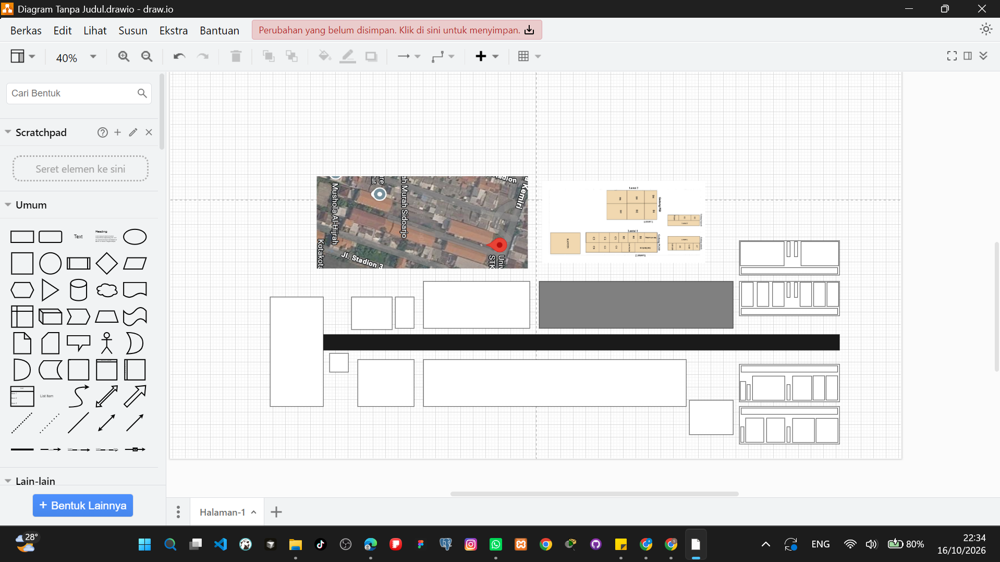
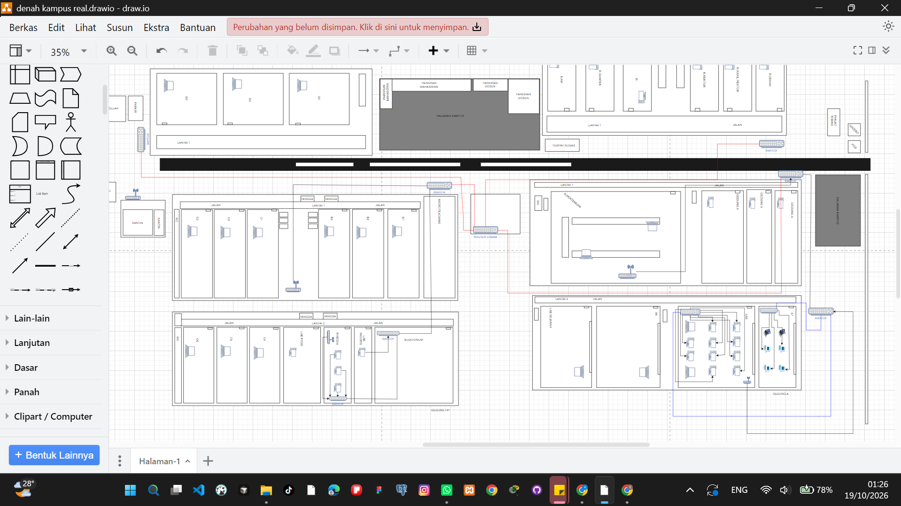
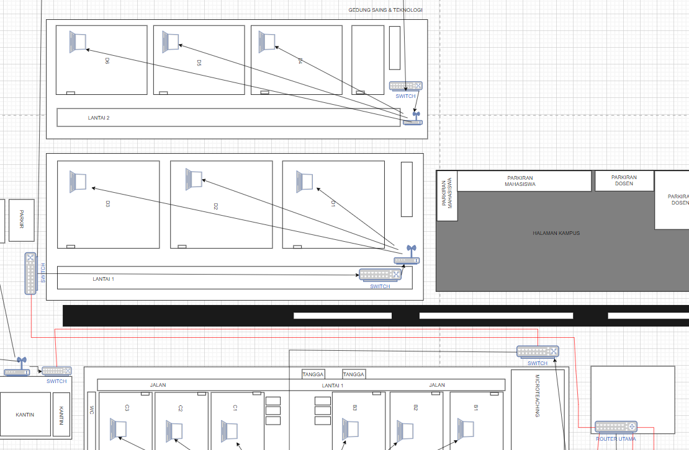

Desain Topologi Jaringan Kampus
Detail Project Desain Topologi




Deskripsi Project
Project ini merupakan desain topologi dikampus unipda
yang saya buat sebagai tugas mata kuliah jaringan komputer dan sebagai proses
pembelajaran jaringan
Desain ini bertujuan untuk memberikan gambar pada kita sebagai mahasiswa bahwa desain
topologi jaringan sebagai berikut
Teknologi yang Digunakan
- DRAW.IO